1 · Surge Alert Header
Bayesian posterior probability of a Salmonella spike, per (state × month) cell. Historical CDC NORS outbreaks form the prior; incoming FSIS supply-chain samples update it via Bayes' theorem.
National seasonal baseline risk
FSIS poultry evidence cells (posterior)
| State | Month | Prior | Posterior | P(risk>0.20) | FSIS k/n |
|---|---|---|---|---|---|
| CA | January | 7.6% | 7.2% | 3.2% | 0/1 |
| KY | December | 12.2% | 11.6% | 11.9% | 0/1 |
| MA | February | 14.6% | 13.9% | 19.0% | 0/1 |
| RI | November | 9.4% | 8.9% | 5.8% | 0/1 |
2 · Trade-Off Matrix
Operational routing scenarios and their safety / protein / cost trade-offs.
| Scenario | Safety | Protein Kept | Cost |
|---|---|---|---|
| Divert to Cooked Lines | High via Heat kill-step | 100% | Moderate |
| Adjust Transit Radii | Moderate | 100% | Low |
| Trigger Enhanced Interventions | Moderate via Antimicrobial washes | Variable | Low |
| Donate Cooked Product | High | 100% | High |
3 · Equity Impact Map
CDC/ATSDR Social Vulnerability Index (SVI) by county, overlaid with Donate Cooked Product routing vectors from highest-risk states to highest-vulnerability counties.
The Mathematics
Every pipeline step, visualized — the joins, the cyclical season encoding, out-of-fold calibration, the Bayesian prior→posterior update, the expected-loss decision rule, and the NARMS danger weighting.
Step 1 · Secure ingestion
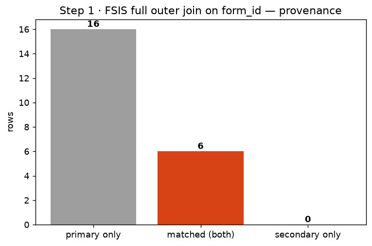
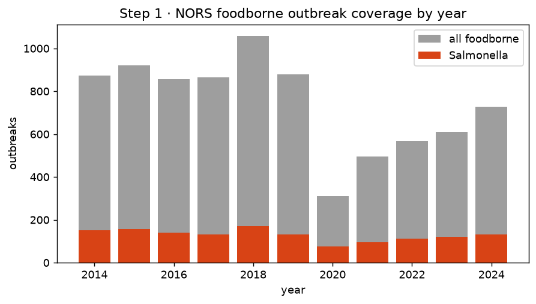
Step 2 · Stateful preprocessing
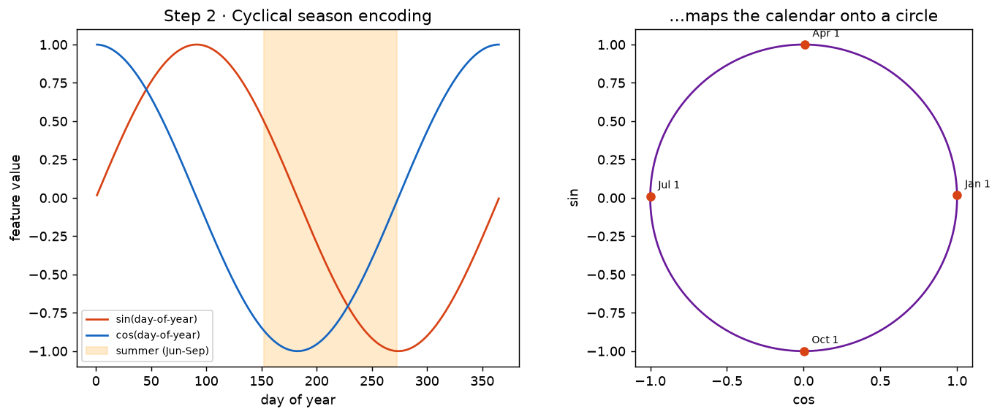
Step 3 · OOF predictions + calibration
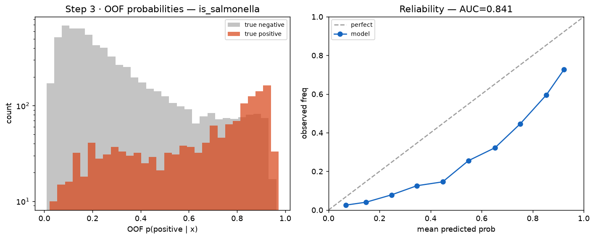
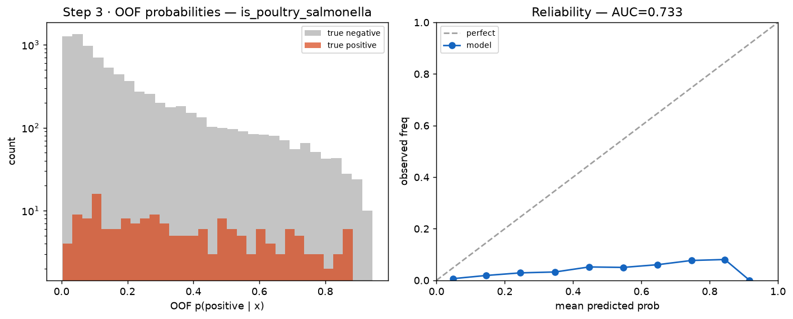
Step 4 · Sequential Bayesian updating
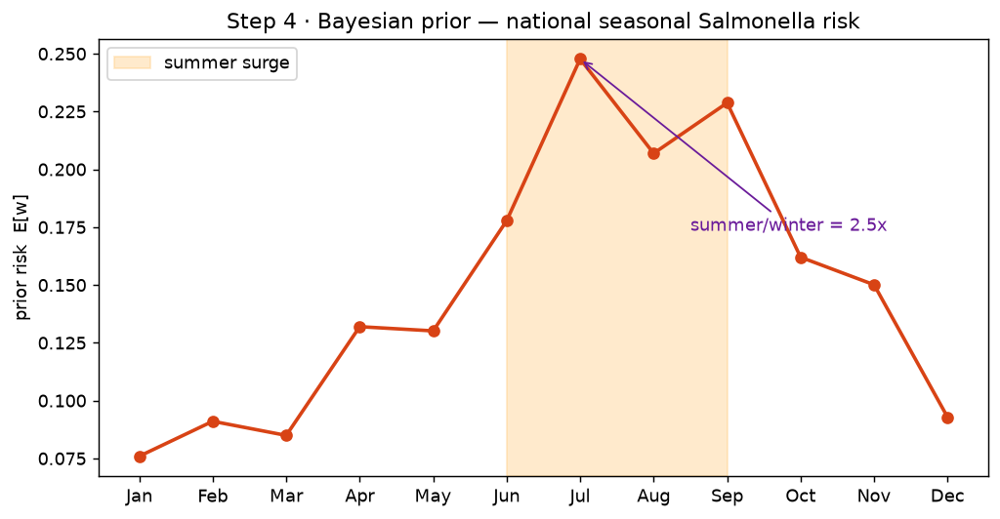
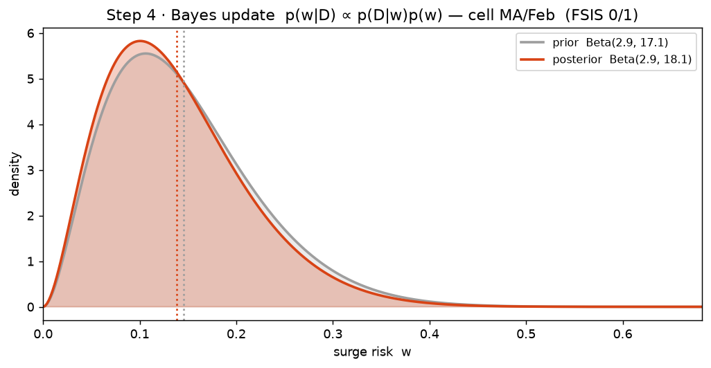
Step 5 · Expected loss & danger-weighted optimization
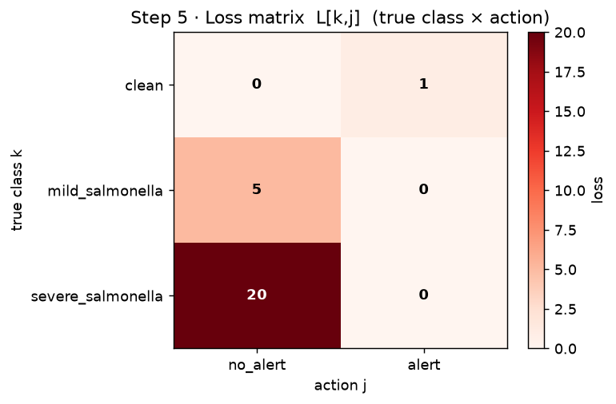
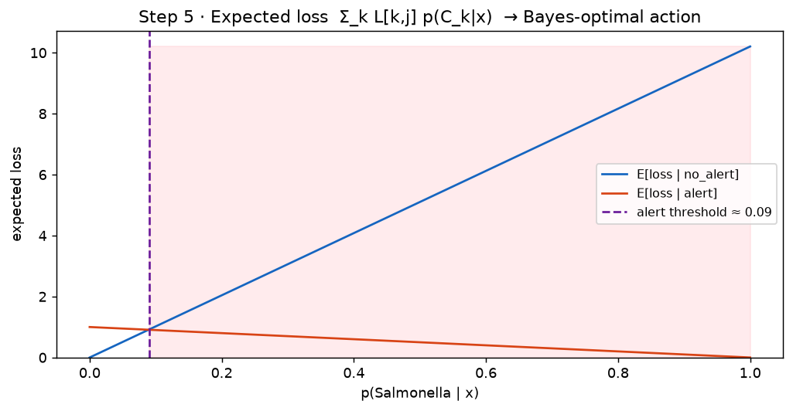
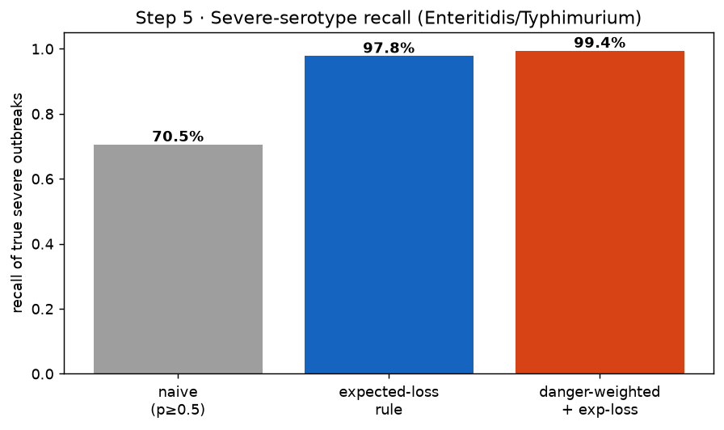
Step 6 · BEAM validation + NARMS weighting
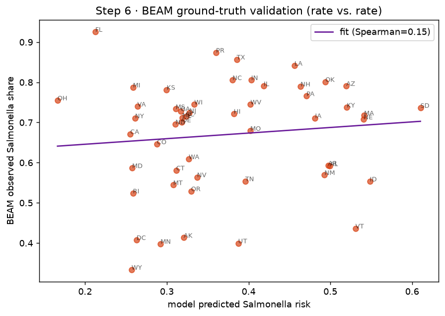
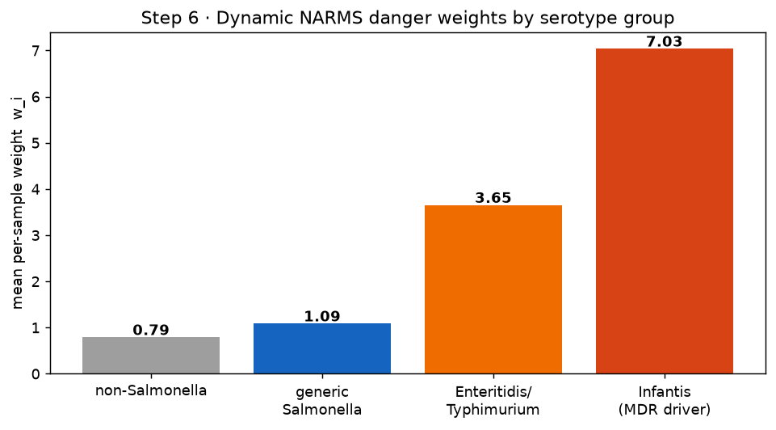
Run it yourself
Full interactive dashboard (live controls, API refresh):
streamlit run app/dashboard.py locally, or use the live
app button at the top of this page.
Pipeline: NORS/FSIS ingestion → leakage-safe preprocessing → out-of-fold predictions + SHAP → sequential Bayesian risk → danger-weighted optimization → BEAM/NARMS validation → this dashboard.